Chapter 04. 프로세서 구조
- 4.1 Y86-64 인스트럭션 집합 구조
- 4.2 논리 설계와 하드웨어 제어 언어 HCL
- 4.3 순차적sequential Y86-64 구현
- 4.4 파이프라이닝의 일반 원리
- 4.5 파이프라인형 Y86-64의 구현
4.5 파이프라인형 Y86-64의 구현
- 순차적 프로세서 SEQ를 약간 변형해서 PC의 계산을 선입 단계로 이동하는 것으로 프로세서를 변경한다.
- 이후 파이프라인 레지스터들을 단계별로 추가한다.
결국은 이 파이프라인형 Y86-64 “PIPE”를 만들기 위해 2장부터 4장까지 달려온 것이다.
우선 컴퓨터가 해석할 수 있는 정수와 부동소수점 표현과 기본 산술에 대해서 2장에서 배웠고,
3장에서는 프로그래머가 작성한 코드를 컴퓨터가가 해석할 수 있는 기계어로 변경하는 것을 배웠고,
4장 초반에서는 해당 기계어를 컴퓨터가 해석할 수 있도록 인스트럭션 집합으로 변경하는 것을 배웠고,
4장 후반 SEQ 구현에서는 해당 인스트럭션을 컴퓨터가 어떻게 해석하는지를 배웠고,
4장 후반 파이프라인 구현에서는 인스트럭션을 해석하는데에 있어 속도를 증가시키기 위해서 SEQ에 파이프라인을 구축하고, 파이프라인 구축할 때의 예외처리를 다룬 뒤 프로세서를 완성시킨다.
4.5.1 SEQ+: 계산 단계들을 재배치하기
- PC 갱신 단계가 클럭 사이클의 마지막이 아니라 맨 처음에 오도록 한다.
- 파이프라인 단계에서의 순차적인 동작을 더 잘 수행할 수 있다.
- 수정된 설계를 “SEQ+”라고 부른다.
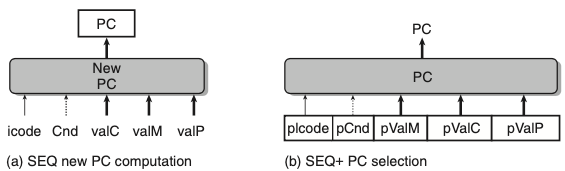
- 위의 그림은 PC 계산 타이밍의 변경이다.
- SEQ+에서 인스트럭션 실행의 첫 단계로 현재 상태에 대한 프로그램 카운터 값을 계산한다.
4.5.2 파이프라인 레지스터의 삽입
- SEQ+의 단계들간에 파이프라인 레지스터들을 삽입하였으며 신호들을 재배치해서 PIPE- 프로세서를 만들었다.
- 파이프라인 레지스터들은 다음과 같이 명명하였다
- F : 프로그램 카운터의 예측 값을 저장한다.
- D : 선입과 해동 단계 사이에 위치한다. 해독 단계가 처리하기 위해서 가장 최근에 선입한 인스트럭션에 관한 정보를 저장한다.
- E : 해독과 실행 단계 사이에 위치한다. 실행 단계가 처리하기 위해서 레지스터 파일로부터 읽어들인 값과 가장 최근에 해독한 인스트럭션에 관한 정보를 저장한다.
- M : 실행과 메모리 단계 사이에 위치한다. 메모리 단계가 처리하기 위한 가장 최근에 실행 인스트럭션 결과와 조건부에 관한 정보를 저장한다.
- W : 레지스터 파일에 기록을 위한 결과, 리턴주소, PC 선택 로직을 저장한다.
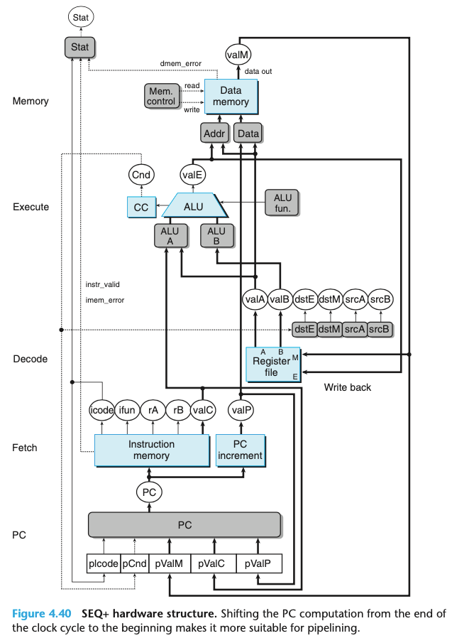
- 위의 그림은 SEQ+ 하드웨어 구조
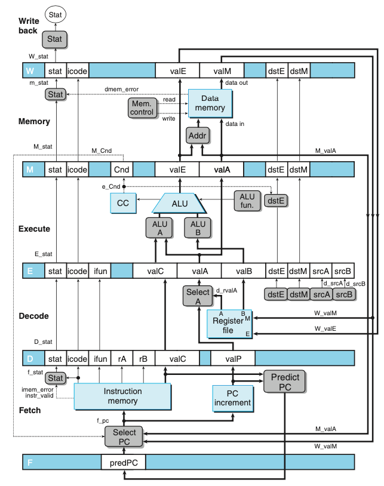
- 위의 그림은 PIPE- 의 하드웨어 구조, 초기 파이프라인 구현
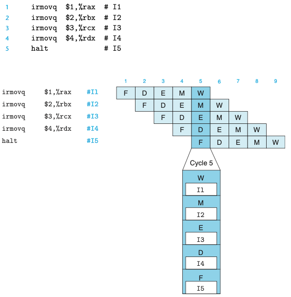
- 위의 그림은 코드 배열이 어떻게 5단계 파이프라인을 통해 흘러가는지를 보여준다.
4.5.3 신호의 재배치와 재명명
- SEQ에서는 한 번에 한 개의 인스트럭션만을 처리했지만, 파이프라인 설계에서는 인스트럭션에 연계된 여러 버전의 값이 존재한다.
- PIPE-의 상세 설계에서 네 개의 서로 다른 인스트럭션을 위한 상태코드를 저장하는 “Stat”이 있다.
- 파이프라인 레지스터의 이름은 대문자를 사용한다. D_stat, E_stat, M_stat, W_stat
- 계산된 일부 신호의 이름은 소문자를 사용한다 f_stat, m_stat
- 전체 프로세서의 실제 상태 Stat이 파이프라인 레지스터 W에 기록된 상태값에 따라 재기록 단계에서 계산된다.
- 일반적인 원칙으로 특정 인스트럭션에 관한 모든 정보를 한 개의 파이프라인 단계 내에 유지하는 것을 원한다.
4.5.4 다음 PC 값의 추정
- 파이프라인 설계의 목표는 매 클럭 사이클마다 새로운 인스트럭션을 실행하는 것이며, 새 인스트럭션이 실행 단계로 진행해서 궁극적으로는 완료되는 것을 의미한다.
- 리턴이나 조건부 점프 인스트럭션은 선입 단계에 계산된 정보를 사용해서 다음 인스트럭션의 주소를 결정할 수 없다.
- 따라서 매 클럭 사이클마다 하나의 새 인스트럭션을 실행하려는 우리의 목표를 달성하기 위해서 대부분의 경우에 PC의 새로운 값을 예측해야 한다.
이부분이 처음에 조금 이해가 안됐지만, 파이프라인 해저드를 공부하고 이해가 됐다. 해저드를 통해 이러한 분기예측을 제어한다.
- 분기의 방향을 추측하고 추측 결과에 따라 인스트럭션을 선입하는 기술을 분기예측branch prediction 이라고 한다.
4.5.5 파이프라인 해저드
- 피드백이 있는 시스템에 파이프라인을 도입하면 연속되는 인스트럭션들 간에 의존성이 존재할 때 문제가 발생할 수 있다.
- 의존성은 두 가지 형태를 띈다.
- 데이터 의존성: 한개의 인스트럭션이 계산한 결과가 다음에 오는 인스트럭션을 위한 데이터로 사용되는 경우
- 제어 의존성: jump, call, ret와 같이 한 개의 인스트럭션이 다음에 따라오는 인스트럭션의 위치를 결정하는 경우
- 의존성들이 파이프라인으로 인해 잘못된 계산을 야기할 가능서이 있을 때 해저드라고 부른다.
- 해저드 또한 데이터 해저드, 제어 해저드로 구분할 수 있다.
특별한 파이프라인 제어 없는 경우의 파이프라인 실행(에러X)
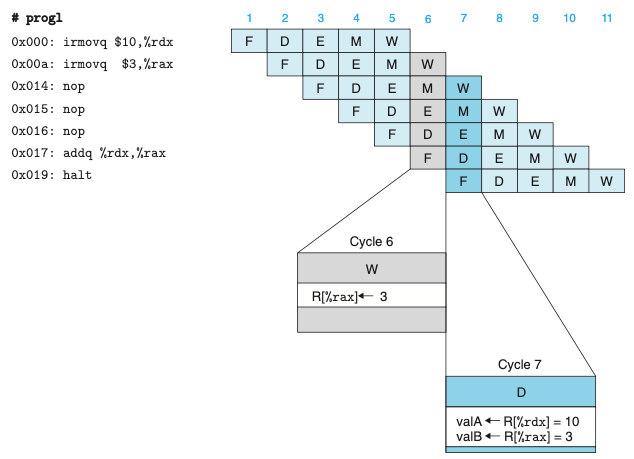
특별한 파이프라인 제어 없는 경우의 파이프라인 실행(에러O)
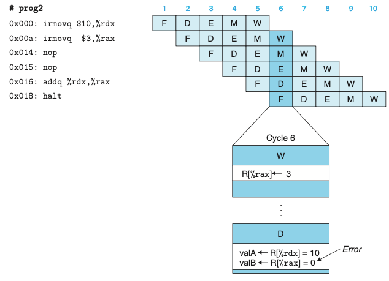
스톨을 사용한 데이터 해저드의 회피
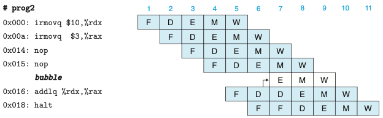
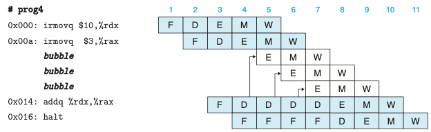
- 해저드를 회피하는 매우 일반적인 기술은 프로세서가 하나 또는 여러 인스트럭션을 해저드 조건이 사라질 때까지 파이프라인 내에 유지하는 스톨과 관련된다.
- 해독 단계에서 인스트럭션을 소스 오퍼랜드를 생성하는 인스트럭션들이 재기록 단계를 통과할 때까지 스톨시키는 방법으로 데이터 해저드를 회피할 수 있다.
- 스톨링은 한 그룹의 인스트럭션들을 이들의 단계에 붙잡아두지만, 다른 인스트럭션들은 파이프라인을 계속 흘러가도록 한다.
- 인스트럭션을 해독단계에 붙잡아 놓을 때마다 실행 단계에 버블을 삽입하는 방식으로 처리한다.
- 버블은 동적으로 생성된 nop 인스트럭션과 비슷하다.
포워딩Forwarding을 이용한 데이터 해저드의 회피
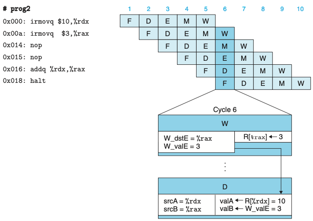
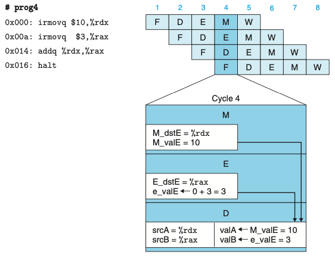
- 재기록 단계에서 이들 소스 레지스터 중의 하나에 대기하고 있는 쓰기 작업이 존재할 수 있다.
- 쓰기 작업이 완료될 때까지 스톨하기보다는 소스 오퍼랜드로 파이프라인 레지스터 E에 기록될 값을 단순히 전달할 수 있다.
- 데이터 포워딩은 메모리 단계에서 대기하고 있는 레지스터 쓰기 작업이 있을 때에도 사용될 수 있다.
- 위 그림은 해독 단계 로직이 레지스터 파일에서 온 값을 사용할지, 포워딩된 값을 사용할지 여부를 어떻게 결정할 수 있는지 보여준다.
- 레지스터 파일에 재기록되는 모든 값과 관련된 것은 목적지 레지스터 ID이다.
- 이 로직은 이 ID들을 소스 레지스터 ID인 srcA, srcB와 비교해서 포워딩을 위한 경우를 검출할 수 있다.
- 다섯개의 포워딩 소스가 해독 단계에 “Sel+Fwd A”와 “Fwd B” 두 블록으로 피드백 된다.
로드/사용 데이터 해저드
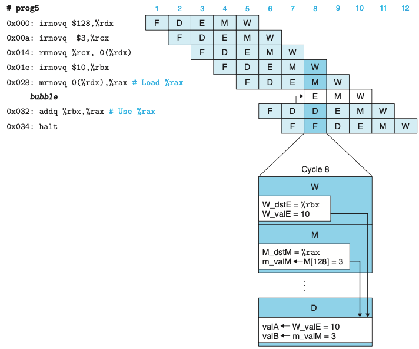
- 메모리 읽기가 파이프라인의 뒷부분에서 일어나기 때문에 데이터 해저드는 순수하게 포워딩만 가지고는 처리할 수 없다.
- 해당 경우는 스톨링과 포워딩을 함께 사용해서 로드/사용 데이터 해저드를 회피할 수 있다.
- 로드/사용 해저드를 처리하기 위해 스톨을 사용하는 것을 로드 인터록load interlock이라고 부른다.
- 포워딩과 결합된 로드 인터록은 가능한 모든 형태의 데이터 해저드를 충분히 처리할 수 있다.
제어 해저드의 회피
- 제어 해저드는 프로세서가 선입 단계에서 현재 인스트럭션에 기초하여 다음 인스트럭션의 주소를 안정적으로 결정할 수 없을 때 발생한다.
- 제어 해저드는 ret와 점프 인스트럭션에 대해서만 발생할 수 있다.
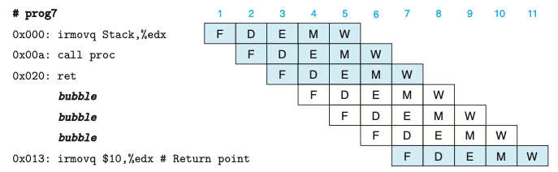
- 위의 그림은 ret 인스트럭션 처리과정이다.
- 파이프라인은 ret가 해독, 실행, 메모리 단계를 통과하며 세개의 버블을 삽입하는 동안 스톨해야한다.
- PC 선택 로직은 ret가 재기록 단계에 도착하면(사이클 7) 인스트럭션 선입 주소로 리턴주소를 선택하게 된다.
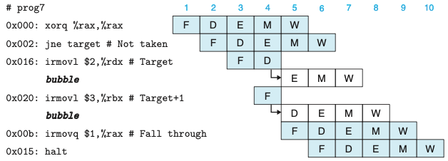
- 위의 그림은 잘못 예측한 분기 인스트럭션의 처리이다.
- 파이프라인은 분기를 할 것이라고 예측하고, 따라서 점프 목적지에서 인스트럭션 선입을 시작한다.
- 점프 인스트럭션이 실행 단계를 통해 흘러갈 때 두 인스트럭션은 사이클 4에서 예측오류가 검출되기 전에 선입된다.
- 사이클 5에서 파이프라인은 해독과 실행단계에 버블을 삽입해서 두 목적지 인스트럭션을 취소하고, 점프 다음에 오는 인스트럭션을 선입한다.
- 간단히 두 개의 잘못 선입한 인스트럭션을 취소할 수 있다.
- 인스트럭션 스쿼싱squashing이라고 불린다.
- programmers-visible state에는 아무런 영향을 주지 않지만 단점은 두 클럭 사이클 만큼의 인스트럭션 처리 능력이 낭비된다는 점이다.
- 스톨링과 파이프라인에 버블을 삽입하는 기술들은 특수한 상황이 발생할 때 파이프라인의 흐름을 동적으로 조절한다.
4.5.6 예외처리
- 프로세서의 다양한 동작은 예외적인 제어흐름을 발생시키며, 이 경우 정상적인 프로그램 실행의 연결은 끊어진다.
- 예외들은 프로그램 실행에 의해 내부적으로 발생하거나 외부 신호에 의해 외부적으로 생성될 수 있다.
- 세 가지 서로 다른 내부 생성 예외
- halt 인스트럭션에 의한 예외
- 인스트럭션과 함수코드의 잘못된 조합을 갖는 인스트럭션
- 인스트럭션 선입 또는 데이터 읽기나 쓰기를 위해 유효하지 않은 주소에 접근하려 하는 경우
- 프로세서가 예외를 만나면 정지하고 적절한 생태코드를 설정한다.
- 프로세서는 운영체제의 일부인 예외핸들러라는 프로시저를 계속 호출한다.
파이프라인과 예외처리
- 파이프라인을 사용한 시스템에서 예외처리는 여러 가지 미묘한 부분들이 관계되어 있다.
- 예외상황이 다수의 인스트럭션들에 의해 동시에 발생할 수 있다.
- 기본 규칙은 파이프라인에서 가장 멀리 있는 인스트럭션이 유발한 예외상황에 우선순위를 둔다.
- 어떤 인스트럭션이 선입되고, 실행을 시작해서 예외를 발생시키고, 나중에 잘못 예측한 분기명령으로 인해 취소할 때 발생한다.
- 파이프라인 제어로직은 인스트럭션을 취소한다.
- 파이프라인 프로세서가 서로 다른 단계에서 시스템 상태의 서로 다른 부분을 갱신하기 때문에 발생한다.
- 파이프라인 제어로직은 메모리나 재기록 단계의 인스트럭션이 예외를 발생시켰을 때 데이터 메모리나 조건코드 레지스터를 갱신하는 것을 김지한다.
- 파이프라인의 하나 이상의 단계에서 예외가 발생할 때 정보는 단순히 파이프라인 레지스터의 상태 필드에 저장된다.
4.5.7 PIPE 단계의 구현
- 파이프라인 레지스터, 재구성 가능한 로직 블록, 추가적인 파이프라인 제어로직을 추가하고, 이전의 순차적 설계 같은 하드웨어 유닛들을 사용한다.
PC 선택과 선입 단계

- 프로그램 카운터의 현재 값을 선택해야하며, 다음 PC 값을 예측해야 한다.
- 메모리에서 인스트럭션을 읽고 여러 가지 인스트럭션 필드들을 추출하기 위한 하드웨어 유닛들은 SEQ를 위해 고려한 것과 동일하다.
- 하나의 사이클 시간의 범위 내에 프로세서는 다음 인스트럭션의 주소를 예측만 할 수 있다.
해독 및 재기록 단계
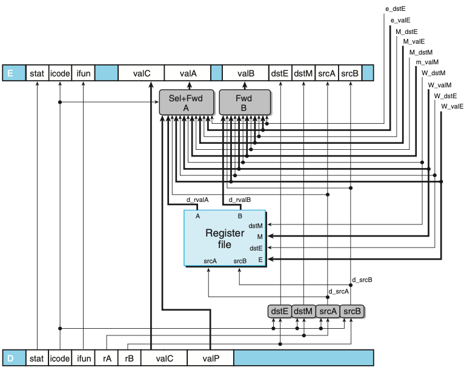
- valP와 레지스터 포트 A로부터 읽은 값을 동시에 요구하는 인스트럭션은 없으며 따라서 이들은 다음 단계를 위한 신호 valA를 구성하기 위해 통합할 수 있따.
- “Sel+FwdA” 블록이 해당 일을 수행하고 valA를 위한 포워딩 로직을 구현한다.
- “FwdB” 블록은 소스 오퍼랜드 valB를 위한 포워딩 로직을 구현한다.
- 레지스터 쓰기 위치는 해독 단계보다는 재기록 단계에서 가져온 dstE와 dstM으로 나타낸다.
- 해독 단계가 현재 재기록 단계에 있는 인스트럭션의 결과를 기록하고 있기 때문이다.
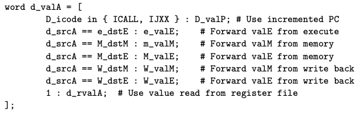
- 위 HCL 코드에서 다섯 개의 포워딩 소스에 주어진 우선순위는 매우 종요하다.
- 우선순위는 HCL코드에서 다섯 개의 목적지 레지스터 ID가 시험되는 순서에 의해 결정된다.
실행 단계
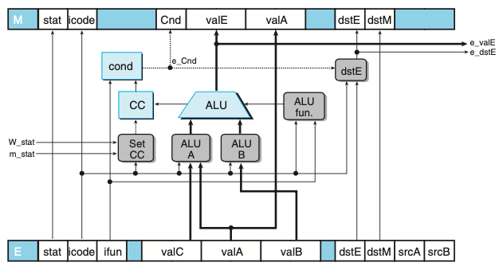
- PIPE 실행 단계 로직이다. 이 부분의 설계는 SEQ의 로직과 매우 유사하다.
메모리 단계
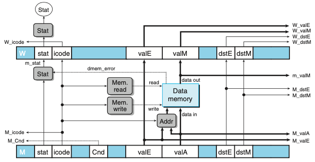
- PIPE 메모리 단계 로직이다.
- 파이프라인 레지스터 M, W의 많은 신호들이 앞 단계들로 전달되어 재기록한 결과, 인스트럭션 주소, 포워드된 값들을 제공한다.
4.5.8 파이프라인 제어로직
- 데이터 포워딩과 분기예측과 같이 다른 방법들로는 처리할 수 없는 다음과 같은 네 개의 제어 경우를 처리해야 한다.
- 로드/사용 해저드 : 메모리에서 값을 읽은 인스트럭션과 이 값을 사용하는 인스트럭션 사이에 한 사이클 동안 스톨해야한다.
- 잘못 예측한 분기 : 예측으로 인해 잘못 선입된 인스트럭션들은 취소되어야 하며, 선입 단계는 점프 인스트럭션 다음의 인스트럭션에서 시작해야한다.
- 예외 : 어떤 인스트럭션이 예외를 발생시키면 programmer-visible state가 갱신되는 것을 막아야 한다.
특수한 제어 상황들의 바람직한 처리
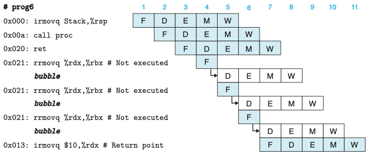
- 위의 그림은 ret 인스트럭션의 상세한 처리과정이다.
- 선입 단계는 ret 인스트럭션 다음의 rrmovq 인스트럭션을 반복적으로 선입하지만, 파이프라인 제어회로는 rrmovq 인스트럭션이 진행하는 것을 허용하는 대신에 해독 단계에 한 개의 버블을 삽입한다.
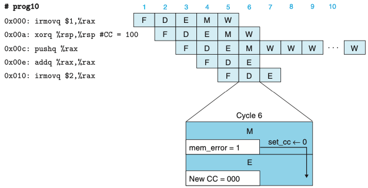
- 위의 그림은 유효하지 않은 메모리 참조 예외의 처리이다.
- 사이클 6에서 pushq 인스트럭션으로 인한 유효하지 않은 메모리 차몾는 조건코드 갱신을 금지시킨다.
- 파이프라인은 메모리 단계에 버블을 삽입하기 시작하고 재기록 단계에 있는 예외 인스트럭션을 스톨시킨다.
특수 제어 조건의 감지
- ret 인스트럭션이 파이프라인을 통과해 갈 때 검출하려면 해독, 실행, 메모리 단계에 있는 인스트럭션들의 인스트럭션 코드를 단순히 체크하면 된다.
- 로드/사용 해저드를 검출하려면 실행 단계에 있는 인스트럭션의 종류(mrmovq, popq)를 체크해야 하고, 해독 단계에 있는 인스트럭션의 소스 레지스터들과 목적지 레지스터들을 비교해야 한다.
- 파이프라인 제어로직은 인스트럭션이 해독 단계에 있는 동안 잘못 예측한 분기를 검출해야 한다.
파이프라인 제어 과정
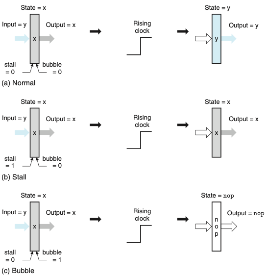
- 위의 그림은 파이프라인 레지스터 동작이다.
- a. 정상 조건 시 레지스터의 상태와 출력은 클럭이 상승할 때 입력 값으로 설정된다.
- b. 스톨 모드에서 동작할 때, 상태는 이전 값으로 고정된다.
- c. 버블 모드에서 동작할 때 상태는 연산의 결과로 기록된다.
제어 조건들의 조합
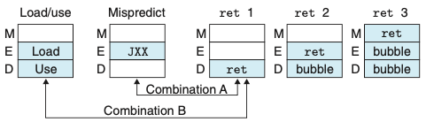
- 위의 그림은 특수한 제어 조건들에 대한 파이프라인 상태이다.
- 표시한 두 쌍은 동시에 발생할 수 있다.
제어 로직의 구현
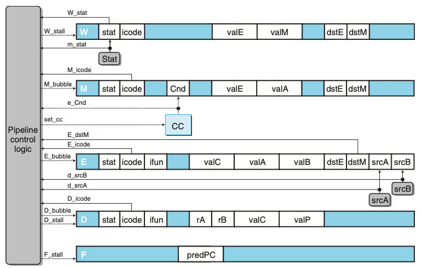
- 위의 그림은 PIPE 파이프라인 제어로직이다.
- 이 로직은 프로시저 리턴, 잘못 예측한 분기, 로드/사용 해저드, 프로그램 예외 같은 특수한 조건들을 처리하기 위해서 정상적인 인스트럭션 흐름이 파이프라인을 통과하는 것을 정지시킨다.
4.5.9 성능 분석
- 인스트럭션마다 걸리는 평균 클럭 사이클 수는 CPIcycles per instruction라는 단위로 추정값을 계산한다.
- Ci 인스트르럭션, Cb 버블을 처리한다면, 프로세서는 Ci + Cb개의 클럭 사이클을 필요로한다.
- CPI = 1.0 + Cb/Ci 이다.
- 오직 세개의 인스트럭션 타입만이 버블을 추가하기 때문에
- CPI = 1.0 lr(load penalty) + mp(mispredicted branch penalty) + rp(return penalty)
4.5.10 남아 있는 작업
- 다중 사이클 인스트럭션
- 다중 인스트럭션을 구현하는 한 가지 간단한 방법은 실행 단계 로직의 성능을 정수와 부동 소수점 산술연산 유닛들을 포함하도록 단순히 확장하는 것이다.
- 한 개의 인스트럭션이 해독 단계에 들어갈 때 특수 유닛으로 보낸다.(ex. 부동소수점 유닛)
- 다중 인스트럭션을 구현하는 한 가지 간단한 방법은 실행 단계 로직의 성능을 정수와 부동 소수점 산술연산 유닛들을 포함하도록 단순히 확장하는 것이다.
- 메모리 시스템과의 인터페이스
4.6 요약
- 해당 장을 통해 인스트럭션 집합 아키텍처 ISA는 프로세서의 동작과 프로세서가 어떻게 구현되는지 간에 추상화 계층을 제공한다는 것을 알 수 있었다.
- ISA는 프로그램 실행을 하나의 인스트럭션이 다음 인스트럭션이 시작되기 전에 실행되어 종료되는 순차적인 프로그램 실행의 모습을 제공한다.
- 여러 가지 인스트럭션들이 요구하는 처리작업을 5단계로 구성하였으며, 전체 인스트럭션이 다섯 단계를 통해 들어가서 매 클럭 사이클마다 실행된다.
- 파이프라인은 여러 단계들이 동시에 동작하도록 하여 시스템의 처리량 성능을 개선한다.
- 예외를 적절히 처리하는 것은 높은 파이프라인 단계와 병렬성을 사용하는 시스템에서 보다 복잡해진다.
- 교훈
- 복잡성을 관리하는 것이 최우선순위를 갖는다.
- 모든 인스트럭션 타입을 처리하기 위한 매우 간단하고 통일된 프레임워크를 만들어서 구현하였다.
- ISA를 직접 구현할 필요는 없다.
- 파이프라인 설계를 사용하였고 파이프라인 해저드를 처리할 수 있었다.
- 하드웨어 설계자는 꼼꼼해야 한다.
- 복잡성을 관리하는 것이 최우선순위를 갖는다.
2장부터 4장이 하드웨어까지의 모든 부분들을 살펴본 것 같다. 4장은 꼭 한번 더 읽어보자.